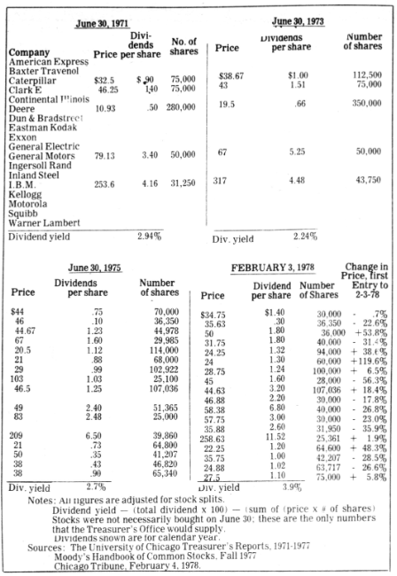
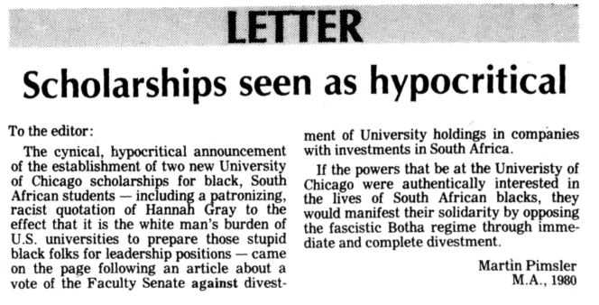

On April 29, 2024, the University of Chicago joined X other universities across the nation in establishing an encampment to support divestment from Israel. Students argued that retracting all university investments in weapons manufacturers and Israeli institutions was imperative to stopping the war on Gaza and saving Palestinian civilian livesCITE (QUOTE?). They erected tents on part of the Quad, hosted daily events, and refused to leave until they obtained a long-sought after meeting with University President Paul Alivisatos.
Paul Alivisatos sent the following email to the student body:
I believe the protesters should also consider that an encampment, with all the etymological connections of the word to military origins, is a way of using force of a kind rather than reason to persuade others. For a short period of time, however, the impact of a modest encampment does not differ so much from a conventional rally or march.
Was Alivisatos correct that student activists had not tried to reason? As a student of the undergraduate class of '22, I had been relatively new to the idea of divestment.
Like Alivisatos, I had assumed that campus movements had originated in the BDS (Boycott, Divest, Sanction) strategy central to pro-Palestine activism, which posited that money constituted the most effective form of non-violent protest. The quotes that introduced this article might well have been said yesterday, but they were pulled from news articles spanning the past 50 years.
Keep scrolling to explore the rich history of divestment movements on UChicago's campus. Click each data point in the graph to view the underlying source article.
During my final weeks of research in the Maroon archives, I opened the 1980s files, hoping to complete the dataset with the earliest articles. The first sentence I read was this:
The protest against U.S. involvement in South Africa has a long history.
Those words were, by now, 57 years old.
Curtis Black, the article's author, was referring to the protests outside the Continental Illinois Bank in 1967, years before the word "divest" was used to describe such movements. Students protesting the bank's holdings in South Africa were summarily arrested. Little else was heard on the topic until ten years later, when momentum gathered at campuses across the country.
"The University's been doing the same thing on the South Side since 1954. No one said anything about that, why is everyone getting upset about a few million blacks in South Africa?"
Activists have long produced more substantive results. In 1978, a student analyzed stocks invested in South Africa and found that the school had not profited from its stocks. In 1986, the Student Advisory Committee to the President prepared a more formal report on divestment from South Africa. And in 20XX, climate activists at UChicago wrote a 59-page report, commissioned by then-President Zimmer, on the practical and moral arguments for and against divestment.
In 2023, UChicago Environmental Justice Task Force filed a legal complaint against the Board of Trustees with the office of the Illinois Attorney General.
Most of the time, administrations appeared to ignore or refuse to take action in response to activist activities.
However, at least once per major movement, campus administration has agreed to give interviews with student newspapers, publish opinion essays explaining their stance, or present public forums organized by student government. On a few occasions, campus groups successfully gained an audience with the administration to negotiate divestment directly.
17% of major divestment-related protests (those documented in the Maroon) have resulted in arrest, totaling 6 arrests. Half of these arrests occurred during the Alivisatos administration.
Regardless of the protestors' tactics, the administration's response, or the benefiting cause, not a single dollar has been divested in the 57 years since the first group of students picketed Continental Illinois Bank. Were all of these movements complete failures?
A not-insignificant number of policy changes has been passed in the intervening years. While not direct divestment, they support students' championed causes in other ways.
In 1985, after 18 years of campus activism, President Gray signed a partnership with South African universities to increase opportunities for South African students in America, as well as to conduct research into social change in the country. In 2007, after nearly a year of campus activism, the Zimmer administration established a support fund of $200,000 earmarked for research on Sudan. And in 2021, 8 years after the formation of the first fossil fuel divestment-related student group at UChicago, President Alivisatos announced a faculty group focused on sustainability.
It is difficult to determine whether campus activism directly caused successive administrations to take action on these causes, or if the resulting actions were at all effective in addressing the target problems.
Universities are peculiar environments, one of the only communities with almost guaranteed 100% turnover every 4 years. Institutional knowledge is incredibly difficult to retain, and sometimes it appears that the campus is repeating history. And yet, this constant churn of ideas may yet be a double-edged sword: universities are also historically foci of social change.
The archives help illuminate the context and history of the past year of divestment movements on campus, but they cannot show us the future. The next 50 years could follow the same endless cat-and-mouse game, or they could hold the key to breaking out. As a campus community, we must take decisive action one way or another: for divestment or against it.
Further reading
Methodology
This project focused on pro-divestment activism and the administration's response. Student- or faculty-led counter-activism events were not included due to project scope. A pro-divestment activism event was defined as follows: 1. all articles from the Maroon website or digitized archives which contained the word "divest" from search results; 2. had divestment as the main subject, excluding meta-commentary on effective strategies for divestment activism or histories of divestment activism; 3. defined divestment as withdrawing current investments, not declining to renew contracts, or other related topics; 4. could be defined as a discrete instance, whether as a news event or a publication, excluding duplicate coverage of the same event; 5. were located on UChicago campus or involved UChicago students, excluding reporting about other schools or Chicago city politics.
Access the data for this project.
Find the code for this project on GitHub.